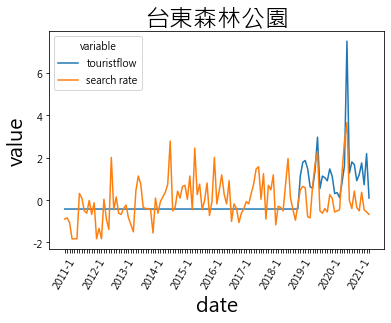

獨立專案
動態公車路線與班次規劃
結合觀光需求訊號、景點距離與路線最佳化，探索班次及路線規劃。
- 我的角色
- 本人整合觀光人流、Google Trends、Popular Times 及景點距離，以需求分攤和 TSP 探索路線班次。

原 notebook 分析圖：景點人流與搜尋趨勢；非路線成果圖。（點圖放大）要解決的問題
觀光需求隨時段變動，路線及班次規劃需整合需求與距離。
輸入、處理與產出
- 輸入
- 觀光人流、搜尋熱度、熱門時段及景點間距離。
- 處理方式
- 將月度人流分攤到星期與小時，以分組距離矩陣及TSP探索路線。
- 產出
- Folium地圖、Gantt班表與Sankey流向，供路線和班次比較。
適用範圍
分攤需求不是實測乘車需求，未宣稱營運採用或節省成本。
核心問題與我的做法
把月度觀光人流變成可排班的時段訊號
觀光人流是月總量，班次規劃卻需要星期與小時的需求形狀。
結合搜尋熱度與熱門時段，將月人流分攤到星期／小時。 串接觀光資料、Google Trends及Popular Times，形成需求分攤流程。
形成可進入路線班次探索的時段需求資料；不是實測乘車需求。
讓路線與時段規劃能被看懂
僅有距離矩陣與求解結果，難以討論路線和人流的關係。
將路線、時間與流向分別用地圖、班表和流向圖呈現。 按group建立距離矩陣並求TSP，以Folium、Gantt、Sankey產出探索視圖。
完成從需求資料到路線呈現的探索流程；無營運採用或節省成本證據。
成果與驗證
完成需求分攤、距離矩陣及 TSP 流程，以地圖、Gantt、Sankey 呈現路線與班次。
Python · OR-Tools · Folium · Google Trends